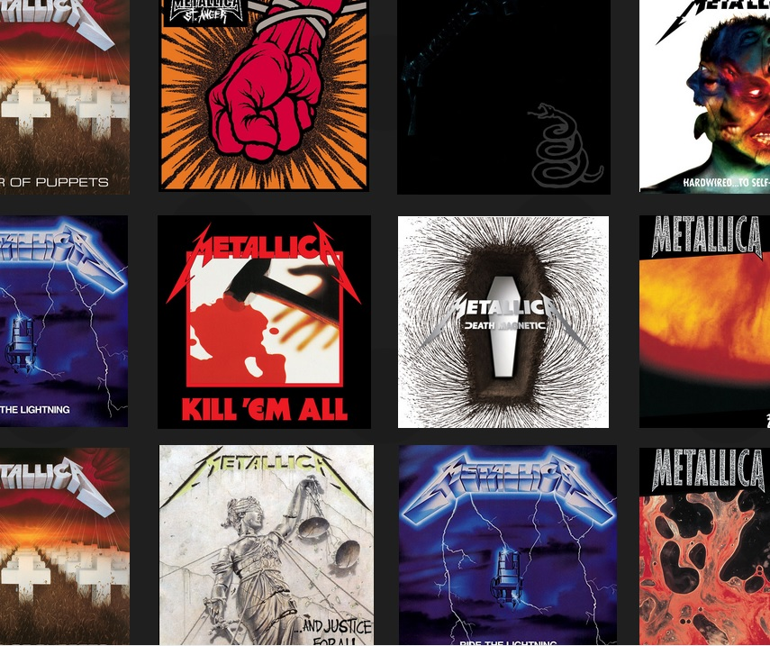
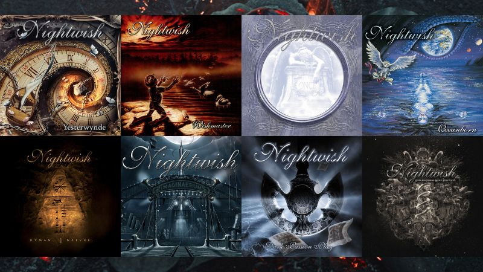

Metallica
- One — …And Justice for All
- Enter Sandman — Metallica
- Master of Puppets — Master of Puppets
- The Unforgiven II — Reload

Linkin Park
- In the End — Hybrid Theory
- Numb — Meteora
- Crawling — Hybrid Theory
- What I’ve Done — Minutes to Midnight

Iron Maiden
- The Trooper — Piece of Mind
- Hallowed Be Thy Name — The Number of the Beast
- Fear of the Dark — Fear of the Dark
- Run to the Hills — The Number of the Beast

Nightwish
- Nemo — Once
- Wish I Had an Angel — Once
- Amaranth — Dark Passion Play
- Storytime — Imaginaerum

Slipknot
- Psychosocial — All Hope Is Gone
- The Heretic Anthem — All Hope Is Gone
- Duality — I Am the End
- Before I Forget — Vol. 3

Ensiferum
- Iron — Iron
- Victory Song — Victory Songs
- In My Sword I Trust — Unsung Heroes
- Wanderer — Wanderer